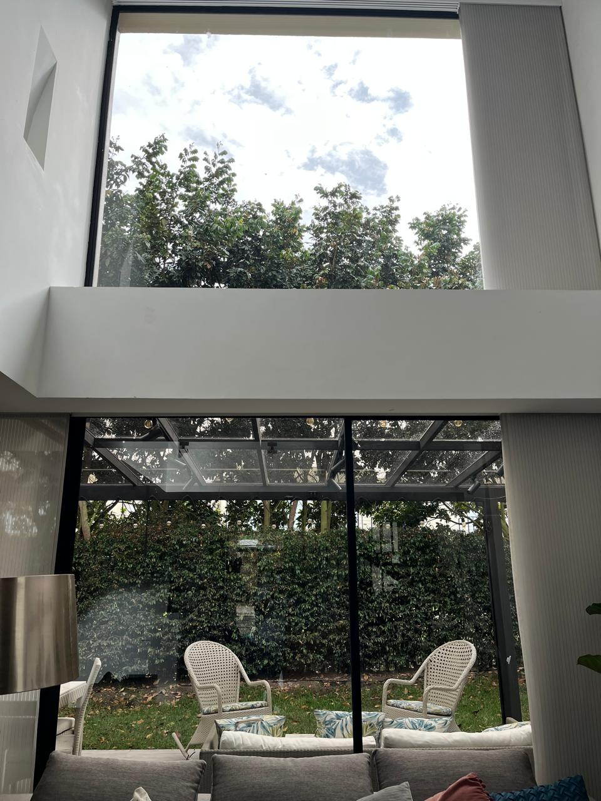
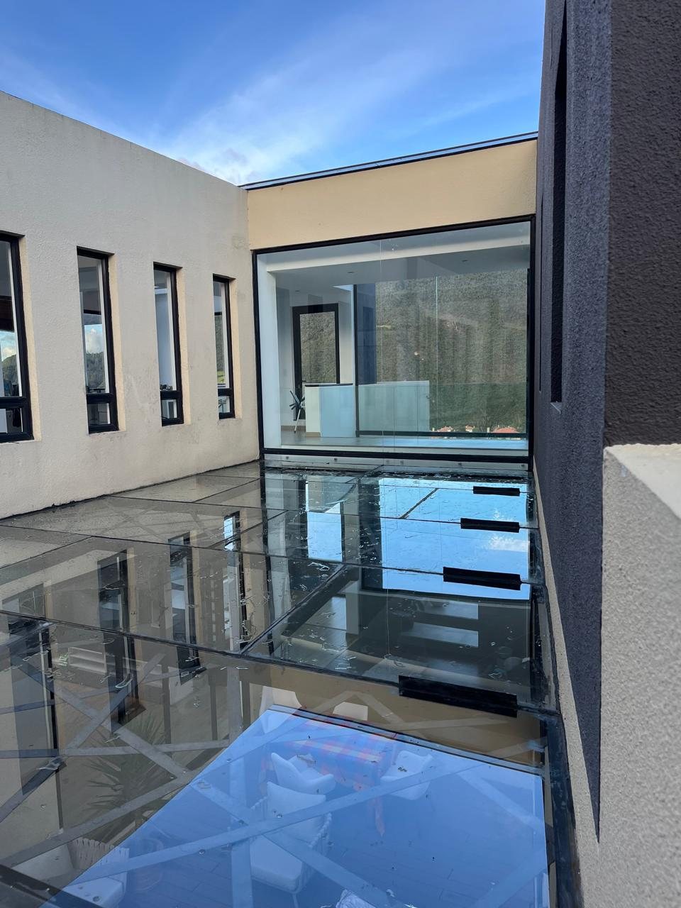

home
Casas
Limpieza de cristales y ventanales en casas y residencias, cuidando marcos, cancelería y acabados. Usamos técnicas seguras para interiores y exteriores, priorizando un secado impecable y sin manchas.
check_circle
Ideal para
Ventanas grandes, domos, canceles, balcones y áreas comunes dentro del hogar.
schedule
Frecuencia sugerida
Cada 4–8 semanas (depende de polvo, lluvia y ubicación).

